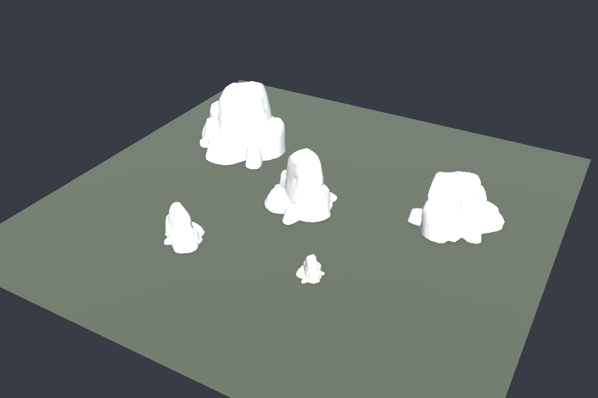
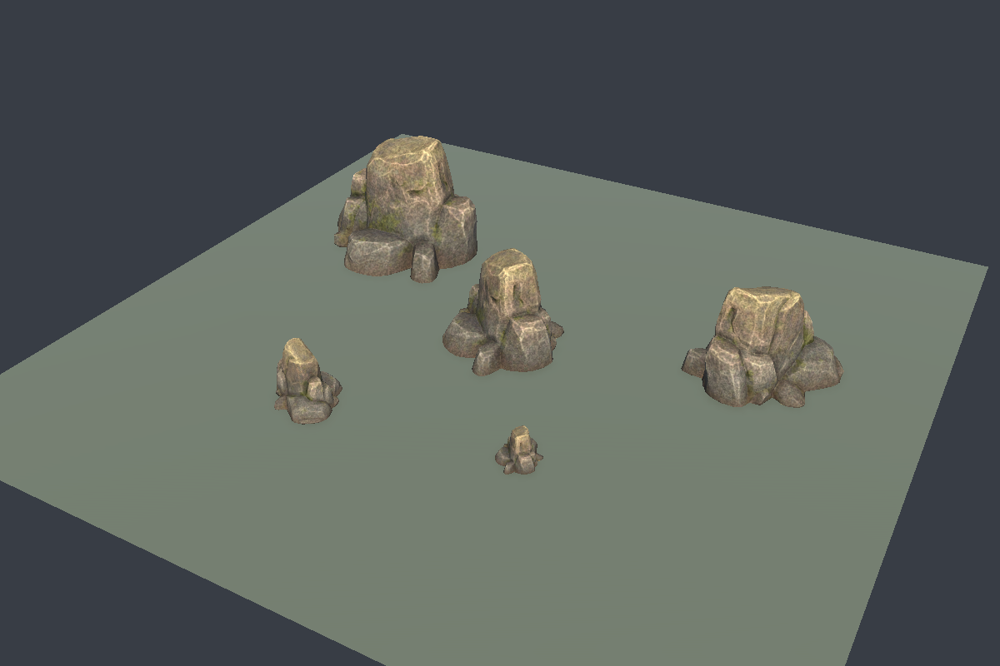
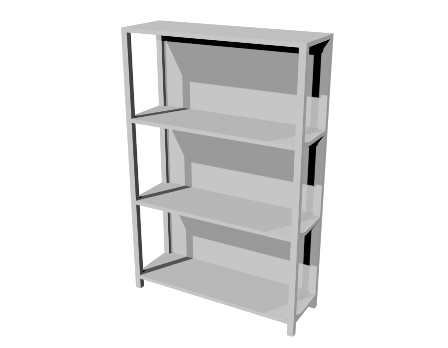
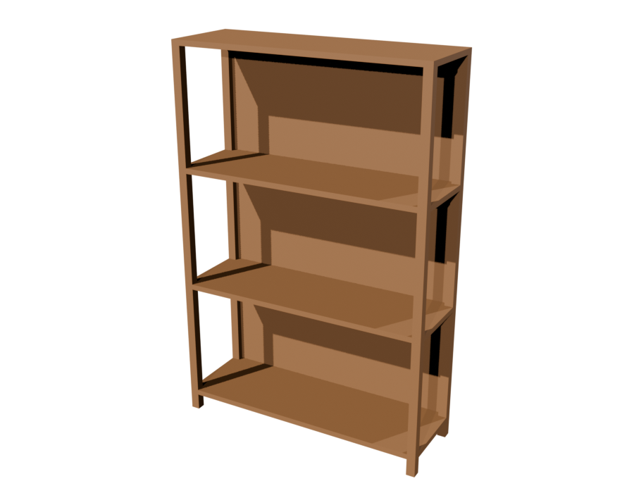
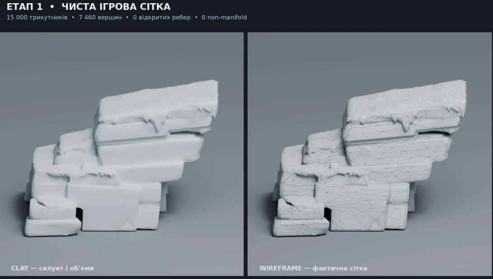
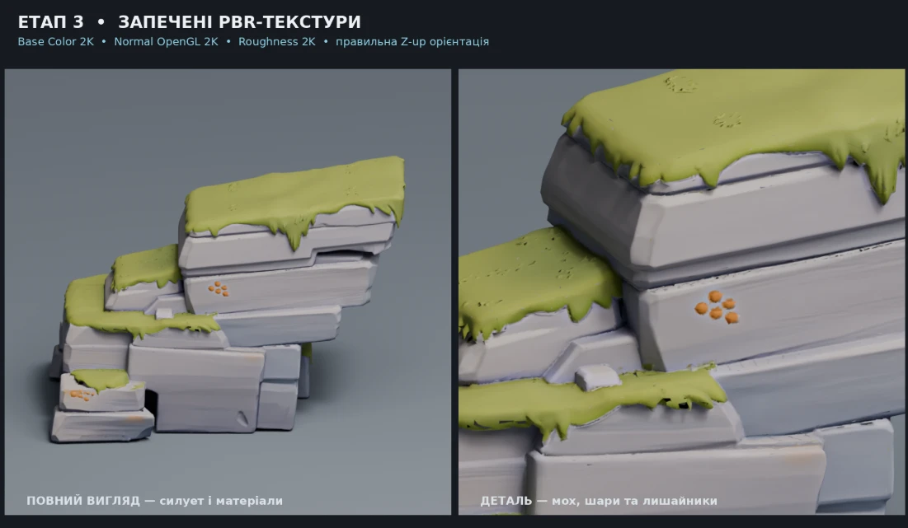
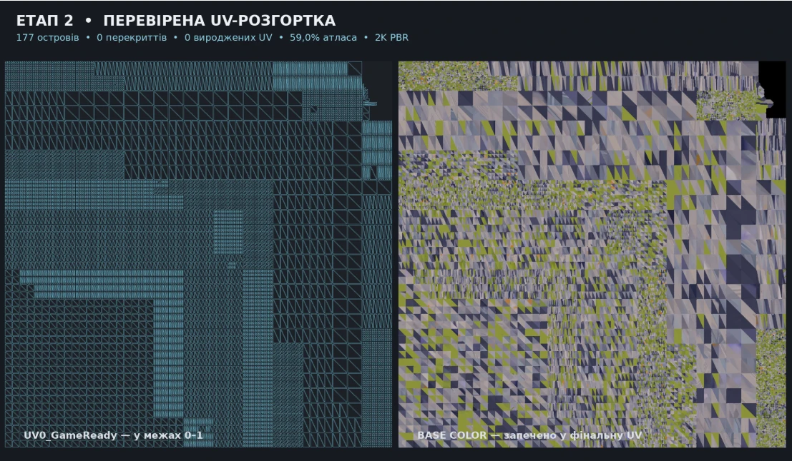
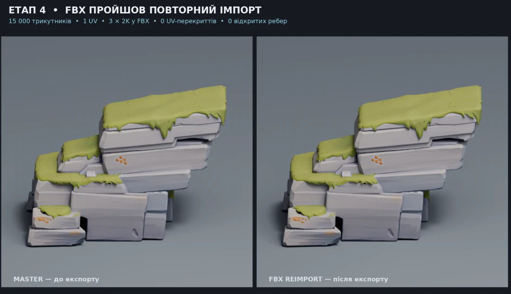

RSG · 3D-ПАЙПЛАЙН · 17.11.2026
Тести через Unity MCP і Blender MCP: 7 моделей, однакові задачі, незалежна перевірка. Плюс окремі спостереження про Kimi 3D Make і DeepSeek.
Claude (Opus, Sonnet, Haiku) · GPT-6 Astra · Gemini 4 Argon · Kimi K3.1 · DeepSeek
МЕТОД
1 · Seed
Скрипт створює пак ассетів або порожню сцену. Що зламано, модель не знає.
2 · Модель
Аудит, виправлення, перевірка і прибирання за собою. Той самий промпт для всіх.
3 · Grader
Кожен пункт перевіряється кодом, а не словами моделі. Штрафи за чужі зміни.
4 · Перевірка
Рендер, історія викликів у редакторі, чистота проєкту, токени з рантайму.
Міряємо: бал, час, токени, помилки, і чи чесно модель оцінює себе (впевненість до оцінки).
ЗАДАЧІ
Unity · v1 · 10 балів
6 дефектів з правил Asset Store: корінь префаба без зсуву моделі, колайдер, sRGB і тип нормал-мапи, remap матеріалу FBX, зайвий файл.
Unity · v2 · 20 балів
2 префаби і 5 розставлених скель, які мають лишитись на місці після виправлення. Лампа в префабі, текстура поза паком, сміття з версіями і пастка, документація.
Blender · 20 балів
Модель за ТЗ з точністю 2 мм: чиста сітка, нормалі, UV без перекриттів, матеріал. Генератор, який grader викликає з іншими розмірами, і FBX для Unity.
UNITY · v2

До: вбудований білий матеріал, у префабі лампа, текстура лежить поза паком.

Після: так виглядав результат у всіх 7 моделей. Скелі стоять точно на своїх місцях.
ГОЛОВНИЙ РЕЗУЛЬТАТ
Якість однакова: 100% у всіх
Unity v1 — 10/10, Unity v2 — 20/20, Blender — 20/20 у кожної моделі, що дійшла до кінця. Ніхто не попався на пастки і не зачепив сцену користувача. Моделі відрізняються ціною, швидкістю і надійністю.
UNITY MCP
| Модель | v1: час · токени | v2: бал | v2: час у Unity | v2: токени | v2: помилки |
|---|---|---|---|---|---|
| Claude Sonnet 5.5 | 1:37 · 104k | 20/20 | 2:46 | 136k | 1 |
| Claude Haiku 5.5 | 2:04 · 118k | 20/20 | 2:51 | 164k | 1 |
| DeepSeek | 2:38 · — | 20/20 | 3:30* | ~9.4M** | 17 |
| Claude Opus 5.5 | 2:19 · 103k | 20/20 | 4:49 | 141k | 0 |
| GPT-6 Astra | 6:32 · 803k | 20/20 | 5:46 | 1.64M | 0 |
| Gemini 4 Argon | 11:40 · 1.66M | 20/20 | 7:25 | 1.26M | 1 |
| Kimi K3.1 | 14:39 · 1.07M | 20/20 | 24:02 | 1.47M | 0 |
* без ~7 хв паузи. ** лише загальний лічильник сесії DSH, верхня межа. Час у Unity — від першого до останнього виклику Unity, однаково для всіх. Токени — з рантайму, а не зі слів моделі; переважно кешований контекст.
ТОКЕНИ
~140k
Sonnet, Haiku, Opus на складній Unity-задачі. У Blender Sonnet витратив 96k.
1.3–1.6M
У 8–12 разів більше на тій самій задачі, переважно кешований контекст і довгі перевірки API.
4–86×
Власні оцінки токенів у моделей занижені: Argon назвав 14.6k при реальних 1.26M. Рахувати треба тільки з рантайму.
Для нас обмеження — тижневі ліміти Claude і Codex, тому ощадливі моделі дають більше роботи за тиждень.
BLENDER MCP
| Модель | Бал | Час у Blender | Токени | Помилки |
|---|---|---|---|---|
| Claude Haiku 5.5 | 20/20 | 1:05 | 105k | 0 |
| Claude Sonnet 5.5 | 20/20 | 1:18 | 96k | 0 |
| Claude Opus 5.5 | 20/20 | 2:47 | 111k | 0 |
| Gemini 4 Argon | 20/20 | 6:24 | 265k | 0 |
| GPT-6 Astra | 20/20 | 13:26* | 1.63M | 4 |
| Kimi K3.1 | 20/20 | ~14:49* | 1.01M | — |
| DeepSeek | додаємо | — | — | — |
* Kimi і Астра працювали в Blender одночасно, тому їхній час завищений. Час — від першого до останнього виклику Blender. Найкращу UV зробив Opus: усі грані в реальному масштабі, однакова щільність текселів.


Sonnet і Астра: однакова геометрія до міліметра. Астра єдина дала дерев’яний колір.
ПРОФІЛЬ · KIMI K3.1
MoE 2.8T, з них 104B активних, контекст 1M.
Нативно бачить картинки й відео, відкриті ваги (1.56 TB).
API $2 / $10 за 1M токенів.
Локальні папки з підтвердженням дій, локальні MCP (так ми підключили Unity і Blender).
WebBridge керує вашим Chrome, cron-задачі, Agent Swarm до ~300 субагентів (заява вендора).
3D Make: 3D-веб, моделінг, друк; Tripo всередині, ланцюжок до FBX.
Генерація зображень: концепт-аркуші з видом спереду, ззаду і масштабом.
Slides, Excel, Word, PDF, Deep Research, публікація сайтів.
Усі тести 20/20 і акуратно, але найповільніший: 24 хв на складну Unity-задачу.
Plus $19: один місячний пул agent-кредитів, наші тести з’їли 26%; 2 паралельні задачі.
KIMI 3D MAKE
High-poly Tripo
→
Voxel Remesh
→
Decimate
→
Cleanup
→
UV
→
Bake
→
FBX

Етап 1: 15 000 трикутників, 0 відкритих ребер, 0 non-manifold.

Етап 3: запечені Base Color, Normal і Roughness 2K, правильна орієнтація Z-up.
KIMI 3D MAKE


+ Tripo вбудований: від генерації до FBX в одному чаті
+ Чиста сітка, 2K PBR, FBX пройшов реімпорт
− UV порізана на 177 дрібних островів, атлас 59%: текстуру вручну не поправиш
− 15k трикутників — це decimate, а не ретопологія
ПРОФІЛЬ · DEEPSEEK V4
V4-Pro і V4.1-Flash, контекст 1M, відкриті ваги MIT.
Тільки API без підписки: Flash ≈ $0.15 / $0.60, Pro ≈ $0.66 / $1.98 за 1M (у пікові години ×2).
Режим міркувань між викликами інструментів.
Відкритий агент-аналог Claude Code з веб-інтерфейсом: файли, shell, пошук, плани, skills.
Агенти: делегує роботу субагентам, фонові дочірні агенти видно в сайдбарі, ролі з наборами інструментів.
Усе в DSH — плагін, MCP-клієнт працює через stdio або HTTP (так ми підключили Unity і Blender).
Модель можна перемикати посеред сесії: у нас flash → v4-pro.
Швидкий і найдешевший: $0.75 за 3 тести, у Unity 3:30 на складній задачі.
Але DSH ще developer preview: 16 збоїв MCP, пропущені пункти перевірки, майже немає зору.
DEEPSEEK
$0.75
2 тести Unity і 1 тест Blender разом. Підписки немає, тільки оплата за токени через API.
+ У самому Unity швидкий: 3:30 чистого часу на складній задачі, на рівні Sonnet.
+ Ціна не залежить від тижневих лімітів Claude і Codex.
− 16 збоїв «unknown tool» від його оболонки DSH; щоразу повторював виклик.
− Під час перевірки пропустив кілька моментів, які знайшов Claude.
− Пропонував вбити MCP-сервери інших застосунків, щоб «полагодити» збої.
− Зору практично немає: оцінювати картинки і рендери йому не довіриш.
ЛІМІТИ І ВАРТІСТЬ
+1%
Один прогін Sonnet у Blender ≈ +1% тижня. Три Claude-моделі на складній Unity-задачі разом з оркестрацією ≈ +3–4%. Ще є 5-годинне вікно, яке закінчується швидше.
26%
Усі тести Kimi (Unity v1 і v2, Blender, налаштування) з’їли 26% місячного agent-пулу. Тобто приблизно 10–12 таких тестів на місяць за $19.
$0.75
2 тести Unity і 1 Blender разом. Без підписки і без лімітів, але й без нагляду не можна.
Kimi: один спільний пул кредитів на Kimi Work, Kimi Code, Deep Research, Slides і агентів, рахується за токенами і скидається щомісяця; тижневого ліміту немає, у Kimi Code є 5-годинне вікно; на Plus — 2 паралельні agent-задачі. Pro ×2, Max ×5, Ultra ×10 кредитів.
ВИСНОВКИ
| Задача | Основна модель | Альтернатива |
|---|---|---|
| Unity / Unreal: паки через MCP | Sonnet, Haiku | Opus для складного |
| Масові скрипти й валідатори | Haiku, Sonnet | DeepSeek, якщо ліміти вичерпано |
| Параметричні пропси в Blender | Haiku, Sonnet | Argon |
| Hi-poly → чорновий game-ready | Kimi 3D Make | наш fal + Blender пайплайн |
| Ретопо й UV під текстурування | Argon, Opus | не Kimi: UV дрібно порізана |
| Оцінка арту, 2D-промпти | Claude, Argon | Kimi як друга думка |
| Рев’ю і складні рішення | Opus, Astra | — |
Якість однакова, тож обираємо за швидкістю, ціною і надійністю. Kimi і DeepSeek передають файли на сервери в КНР: для клієнтських проєктів це треба погодити.
ДАЛІ
1. Дописати Blender-результати Opus і DeepSeek, повторити Kimi без паралельних моделей.
2. Тест Kimi 3D Make проти нашого Tripo + Blender пайплайну на тій самій скелі: якість сітки, UV, час, ціна.
3. DeepSeek як резервний виконавець: окремий ключ, тільки пісочниця, без права керувати процесами.
4. Повтор складних тестів 2–3 рази для важливих моделей, бо один прогін — це ще не статистика.
5. Узгодити з адміном, які проєкти можна віддавати Kimi і DeepSeek.